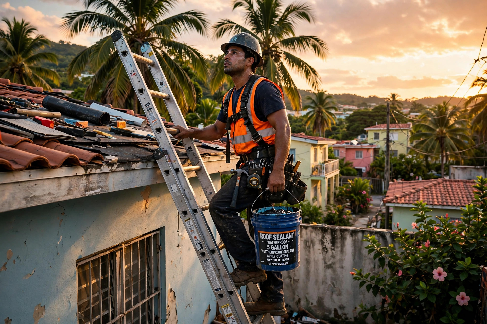

Ponce · Puerto Rico
Sellado, reparación e impermeabilización de techos con un solo estándar: el trabajo bien hecho, sin atajos.
Residencial y comercial · Sellado, reparación e impermeabilización en Ponce y áreas cercanas.
Galería
Techos sellados, reparados y detallados: del amanecer al acabado.

Lo que hacemos
Atendemos Ponce y pueblos cercanos.
Sistema de sellado completo contra agua, sol y humedad, con acabado uniforme.
Pedir cotización →Reparamos grietas, filtraciones y daños antes de sellar, para que el trabajo dure.
Pedir reparación →Impermeabilización de techos residenciales y comerciales con materiales de calidad.
Pedir cotización →Sellado de tuberías, desagües y uniones: los puntos donde empieza la filtración.
Pedir cotización →Cómo trabajamos
El mismo cuidado en cada techo.
Revisamos tu techo y te decimos qué necesita de verdad, sin venderte de más.
Reparamos grietas y daños en la superficie antes de aplicar cualquier sellado.
Aplicación uniforme del sistema con detalle en uniones, tubos y desagües.
Dudas comunes
Cotización gratis
Completa los 3 pasos y te abrimos WhatsApp con tu solicitud lista para enviar.
Tu presencia en internet
Esta página es una muestra de lo que ManuPro hace por tu negocio. Elige tu plan:
Contacto
Escríbenos por WhatsApp o llámanos. Estamos en la Urb. Sombras del Real, Ponce.